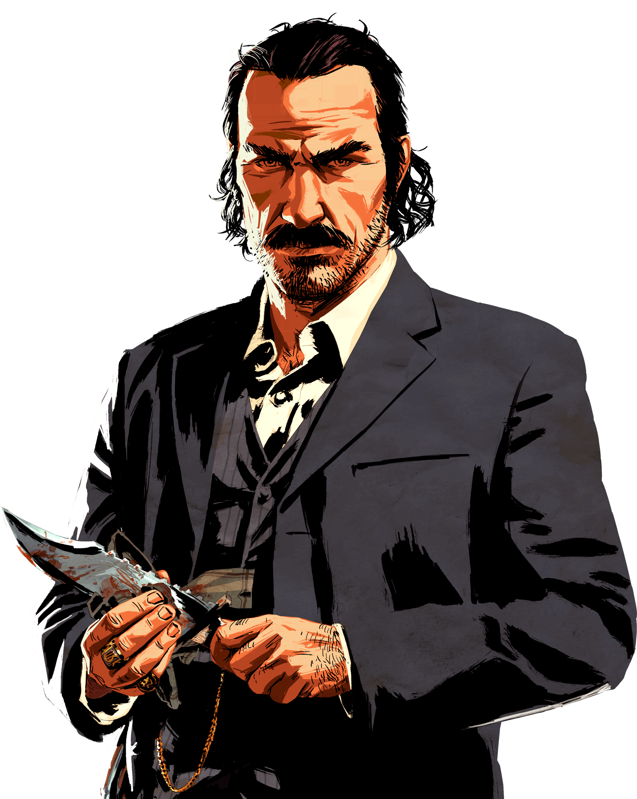
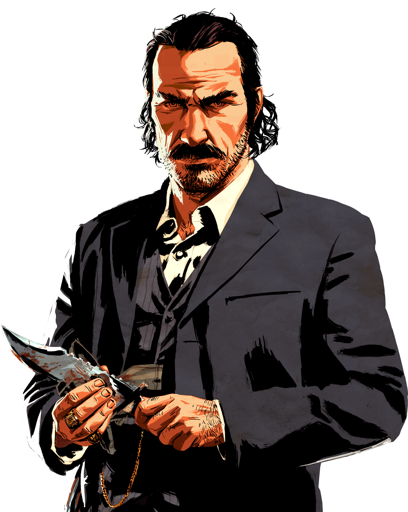

The END OF WILD WEST
Amérique, 1899. L'ère de l'Ouest sauvage touche à sa fin alors que les autorités ont décidé de traquer les dernières bandes de hors-la-loi qui sévissent encore. Ceux qui ne se rendent pas ou résistent sont tués.
Suite à un braquage qui a mal tourné dans la ville de Blackwater, Arthur Morgan et le reste des hors-la-loi de la bande de Dutch van der Linde doivent prendre la fuite vers l'est. Les agents fédéraux et les meilleurs chasseurs de primes du pays se mettent à leurs trousses et la bande commet méfaits sur méfaits dans les vastes terres sauvages de l'Amérique dans un seul et unique but : survivre. Alors que des querelles internes menacent de faire voler la bande en éclats, Arthur est tiraillé entre ses propres idéaux et sa loyauté envers la bande qui l'a élevé.
Vanderlin Gang
“Évidemment qu'ils nous lâchent pas, on représente tout ce qu'ils redoutent.”
 
